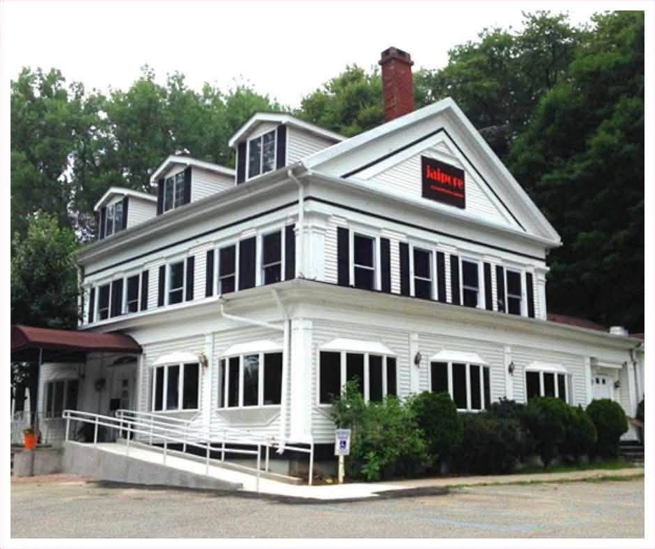
The Theall Homestead
The Iron Works Farm, Croton Valley Farm, the Pine Tree Lodge — the house on the road from Croton Falls to Brewster.
Draft narrative — the chain of title is documented continuously from 1811 to 2022, and the building’s hospitality era of the 1920s is now documented from contemporary newspapers. Map checks, probate files, and the pre-1811 Dutchess County chain remain open; unresolved questions are listed at the end.
I. The Farm and the Building
The white building on the east side of Route 22 between Croton Falls and Brewster — for the past quarter-century the Jaipore Royal Indian Cuisine restaurant — is the surviving homestead of a farm that one extended family held for a hundred and seven years. From Hachaliah Theall’s purchase of 142¼ acres in 1821 PC M/16, through his widow’s additions, his sons’ consolidation, the half-century stewardship of two brothers, and the Connecticut nieces and nephews who inherited it, the land passed by blood and by will — never once, in all that time, by an ordinary sale between strangers — until a Mount Kisco corporation bought it in 1928 and cut the house corner off for resale.
The property carries a remarkable sequence of names across the record. Before the Thealls it was “the Hallett or Iron Works Farm” PC A/262; under the brothers it appears on the 1867 county atlas as “Croton Valley Farm”; in 1895 and 1898 it is the “Arvah Theall Homestead Farm” PC 80/155 PC 81/562, weathering by 1910 into the “Old Theall Homestead Farm” PC 101/42. Its hospitality era then produced four trade names in a decade: the Colonial Coffee House (by 1920), the Pine Tree Lodge (from May 1922), and the Beecher Lodge (by 1928) — the middle name fixed to this property beyond doubt by a 1924 notice describing the lodge as “the property of Mrs. M. W. Jennings,” whose only Brewster holding of record was this farm. Beneath the trade names ran a constant: the pine grove, and the colloquial name it gave the place — “The Pines,” the style Mary Jennings used of her own residence in the 1919 lease PC 117/365, and the name a local family still used for the house in 1954.
When was the house built?
No instrument in the chain dates the building, and the phrase every twentieth-century deed carries — “with the buildings and improvements thereon erected” — is boilerplate that attests existence and never age. What the record supports is a bracket, and it has tightened from both ends.
The land had no house of consequence in 1821. The evidence is arithmetic. Benjamin Lent assembled roughly 194 acres here in six purchases between 1811 and 1818, paying an average of about $23 an acre and as much as $37.50 for the best of it. He then sold Hachaliah Theall 142¼ acres at $18.63 an acre — the bottom of his own range. Lent kept the expensive ground and sold the plain; a working farm with a good dwelling commands a premium, and this did not. Nine consecutive instruments from 1811 through 1837 convey “Land” and never once mention buildings.
Nothing could have been built between 1821 and 1842. Hachaliah died within ten years of buying, leaving a life interest to his widow and seven heirs holding undivided shares PC Q/150; the last release came in November 1844. No one builds a substantial house on land in which he owns an undivided seventh.
The window opens on December 28, 1842, when Thatcher and Arvah Theall took the homestead into clear title between them, and a Theall farmstead is on the county maps by 1854: R. F. O’Connor’s county map of that year marks structures at “T.H. & A. Theall” on this road, the Beers atlas of 1867 labels the property “T.H. & A. Theall — Croton Valley Farm” with the house symbol in place, and Reed’s 1876 map repeats the label. One candor about the earliest sheet: at O’Connor’s small scale the structure symbols crowd the west side of the road while the surviving house stands east of it — which may be nothing more than an engraver’s convention, or may mean the 1854 farmstead buildings stood across the road from the present dwelling. The maps prove continuous Theall occupation of this site from 1854; they cannot, at that scale, date the surviving house.
The building’s visible form — gable-front main block, boxed cornice with returns, wide frieze, corner pilasters — is Greek Revival of roughly 1835–1865, and it is plainly not one campaign: a main block and a lower dormered wing. The family’s finances offer two moments — the years just after consolidation, c. 1843–48, and the flush years around the railroad settlement of 1850 PC W/270 and the mineral sales of 1857 PC 31/392 PC 32/2 PC 32/98. The traditions of “1850” and “1856” both fall inside that span, and the honest present state of the question is a choice the paper record has not yet made: an 1840s house enlarged with iron money in the mid-1850s, or a new mid-1850s house replacing (or facing, across the road) an earlier farmstead. The assessment rolls, the 1855 state census — which recorded each dwelling’s material and value — and the building’s own fabric are the arbiters. Whichever way they rule, the arithmetic of ownership admits only one conclusion about authorship: the Thealls built it.
II. Before the Thealls: The Iron Works Farm
The ground has a history before the family that gave it its lasting name. In August 1811 — seven months before Putnam County was carved out of Dutchess — Hackaliah Bailey of the Town of Somers and Mary R. his wife conveyed to Benjamin Lent an undivided third of a parcel described as
part of a Farm commonly called the Hallett or Iron Works Farm … Beginning at the Southwesterly Corner of the hereby granted Premises by the Southeasterly Corner of David Crosby’s Paper Mill Lot & on the line between the Counties of West Chester & Dutchess…
Hackaliah Bailey to Benjamin Lent, August 5, 1811 — Putnam County Liber A of Deeds, p. 262
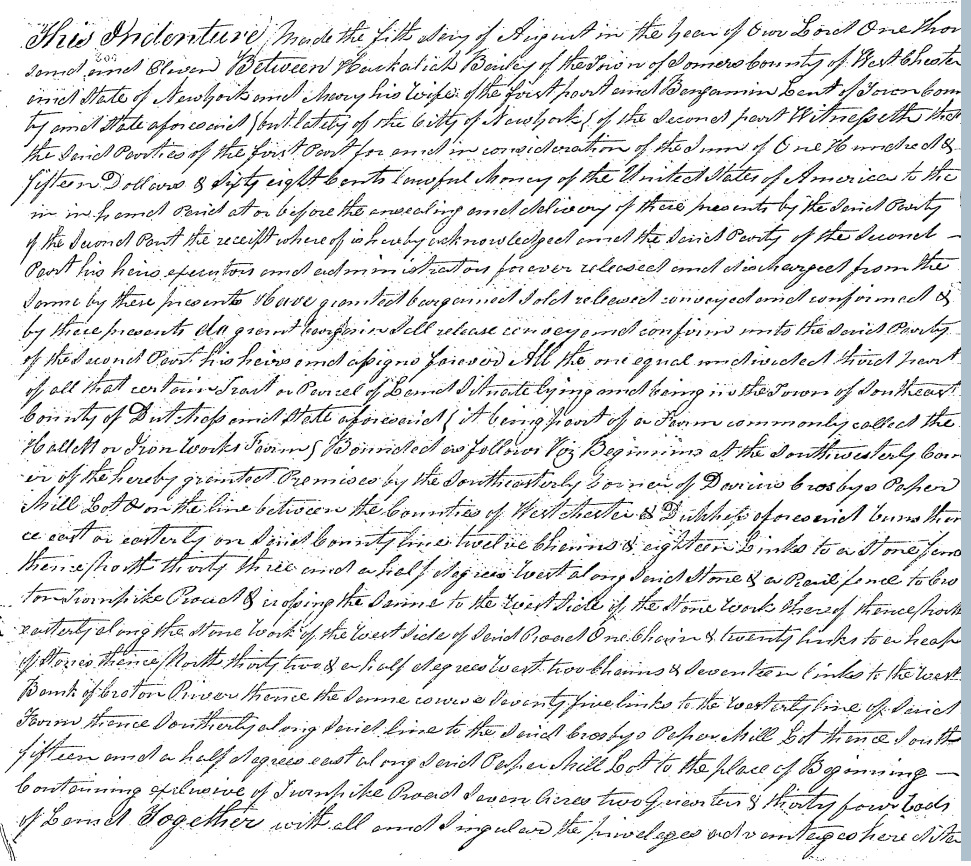
The name is the find. The Hallett or Iron Works Farm was what this tract was already called locally in 1811, and it points at iron working on the Croton at or beside this spot well before the Thealls arrived — which sets the family’s 1857 sale of mineral rights in a far longer tradition than the mid-century mining boom alone would suggest. The paper mill named in the same breath is no less durable: David Crosby’s Paper Mill, and its pond, appear as a boundary monument in nearly every description of this land for the next thirty-five years.
Benjamin Lent was an assembler, not a farmer buying a farm. Between 1811 and 1818 he made six purchases here — four from Bailey, one from Aaron Brown, one from James Phillips — and recorded all six in a single week at the end of August 1818:
| Deed | Date | Grantor | Extent | Price |
|---|---|---|---|---|
| A/262 | Aug. 5, 1811 | Hackaliah Bailey | 7 ac. 2 r. 34 rods | $115.68 |
| A/264 | May 10, 1814 | Aaron Brown | 1 ac. 2 r. 14 rods | $105 |
| A/267 | Mar. 25, 1815 | Hackaliah Bailey | 19 ac. 1 r. 13 rods | $583 |
| A/265 | Dec. 9, 1816 | Hackaliah Bailey | 40 ac. | $1,500 |
| A/269 | Dec. 1817 | Hackaliah Bailey | 108 ac. in three pieces | $2,000 |
| A/271 | Apr. 4, 1818 | James Phillips | 17 ac. 2 r. 20 perches | $200 |
Three years later he sold 142¼ acres of it to Hachaliah Theall and kept the rest — which is why the Phillips lot appears in every subsequent description of the homestead as an adjoining monument rather than as part of it. The 40-acre and 108-acre Bailey purchases together make 148 acres, and are the most likely core of what became the Theall farm.
Hackaliah Bailey requires a word. He was of Somers, in Westchester County, and he was not an obscure man: the Bailey who bought the elephant Old Bet, launched the American traveling menagerie business, and built the Elephant Hotel that still stands on the Somers green. Four of the six deeds that assembled this property came from his hand. The coincidence of his given name with Hachaliah Theall’s — a rare name, in two neighboring families, in the same decade and the same small orbit — is the sort of thing that usually indicates kinship or naming across families rather than accident, and the association persisted: Thatcher and Arvah Theall were still trading with a Bailey in 1860 and 1862.
Source note: the identification of the grantor as the menagerie proprietor rests on the name, the residence recited in the deeds (Town of Somers, Westchester County), and the dates. It has not been confirmed from Bailey family papers.
III. Hachaliah and Huldah
On June 25, 1821, Benjamin and Belinda Lent of Somers conveyed to “Huckaliah Theal” of North Salem, Westchester County, for $2,650, a tract “Containing One hundred and forty two acres and one rood” PC M/16. The deed was not recorded for some eighteen years — the first and largest instance of a habit that runs through this family’s paper, which recorded promptly when a transaction needed to be public and sat on it otherwise.
The description is a period piece. It begins “at a stake by a stone wall the northwest side of the Croton Turnpike road” — the road’s proper name, two identities before it became the State Road and three before Route 22 — and the tract straddles the turnpike from the outset, crossing the river “at the head of the paper Mill pond” and running to within fifty links of the Croton’s west bank. The western pieces of every later description of this property, down to the small triangle whose title was still doubtful in 1946, descend from that ground west of the road. The adjoining owners named — James Gregory at the river, Nathan Mead north, Samuel T. and Zebediah Brown east, and David Adams south at a black oak tree — recur for the better part of a century; the Adams family still bounds the farm on the south in a deed of 1910.
Hachaliah Theall did not hold it long. On April 2, 1831, Aaron and Letty Brown of Somers sold twenty-six acres and twelve perches to Huldah Theall, of the town of Southeast, for about $217 PC H/486 — and the bounds of that parcel run twice against “the lands of the heirs of Hachaliah Theal Dec’d.” He was dead by the spring of 1831, having owned his farm for at most ten years. His widow was buying land in her own name, and living on the place.
The composition of the homestead was set out fifty-five years later by a man who had grown up on it. Arvah Theall’s will of 1886 describes his farm as containing about one hundred and eighty acres,
which includes the farm of land purchased by my father Hachaliah Theall of Benjamin Lent containing about one hundred and forty acres, and twenty six acres which my mother Huldah Theall purchased of Aaron Brown, and it also includes a strip of land of about fifteen acres of the Travis farm, left after the sale to John H. Cheever…
Will of Arvah Theall, January 22, 1886 — Putnam County Liber 68 of Deeds, p. 126
Both purchases check to the perch against the deeds themselves, and the acreages sum — 142¼ plus 26 plus about 15 — to the “about one hundred and eighty” he recalled. It is a striking piece of accuracy at that distance.
A fourth acquisition belongs to the next generation. On April 17, 1837, Daniel S. Judd, Betsey Deck(?), and Ann Dean of Patterson sold thirty-five acres west of the turnpike — river to road, Elijah Dean north, David Adams south — to three of Hachaliah’s sons: Hopkins, Arva, and Orrin Theall, for $2,000 PC L/83. At roughly $57 an acre that is three times the rate the family paid for the homestead, on ground that included river frontage and a bridge; what made it worth the money is an open question, and a mill privilege is the obvious thing to test.
Source note: Hopkins Theall appears in this deed and in no other Putnam instrument. His undivided third of the 35 acres was never released of record, so far as the index shows — a loose end noted below.
IV. The Consolidation, 1841–1845
Hachaliah Theall left a will. Two deeds recite it, and between them they describe its architecture: a life estate to his widow in her thirds, with the remainder at her death “equally to be divided between the heirs of the said Hachaliah Theall deceased” — and one of those heirs, quit-claiming in 1842, reserves to himself “the equal undivided one Seventh part” of it PC Q/150. Seven heirs. The will itself has not been located.
Gathering seven undivided shares into working hands took four years and six instruments:
January 2, 1841 — Lydia L. Theall releases her share of the 142 acres to three brothers, Thacher, Arva, and Orwin, for $500 PC S/32. Orwin is then living in New York City. The deed is held four years before recording.
April 1, 1842 — Orwin conveys his inherited interest in both parcels to his mother, for $1,200 and $1,000 PC P/428 PC P/429.
December 26, 1842 — Huldah conveys it all back to him for $2,200, the April sums reversed to the dollar PC Q/154. The round trip was procedural: title had to be gathered in one pair of hands and passed on in a form that preserved the widow’s life estate, which Huldah could not have done by conveying directly.
December 28, 1842 — Orwin and Ann Maria his wife convey the homestead to Thacher H. and Arvah Theall for $1,200, expressly reserving his one-seventh of the widow’s thirds PC Q/150; and by a second deed the same day, his undivided third of the 35 acres for $700 PC Q/153. Orwin took his money and left; four decades later his brother’s will would find him at Tamarack in Danbury, Connecticut.
November 19, 1844 — Susan Theall releases her share for $300 PC S/34. She executes alone, with no husband joining and no private examination — the procedure applied to every married woman in these instruments. Susan Theall was unmarried in the autumn of 1844. She married a Jennings afterward, and that marriage is the hinge on which the second half of this history turns.
Two of the acknowledgments were taken by Thacher H. Theall, “one of the Justices of the Peace of said County of Putnam” — a detail that will matter when we come to the legends. He was serving as a magistrate from at least May 1842, seven months before he took title to his father’s farm.
V. Thatcher and Arvah: The Brothers’ Half-Century
From December 1842 until his death in the winter of 1885–86, the Old Theall Homestead belonged to two brothers. The deed indexes record “Thatcher H. & Arvah” buying and selling together for forty-four years, and Thatcher’s will removes any doubt about the relationship: he leaves everything to “my brother, Arvah Theall.” Neither will mentions a wife or a child. The Theall homestead of the mid-nineteenth century was a brothers’ household, kept in Arvah’s later years by a housekeeper, Antionette Turner, whom he remembered with a $3,000 life trust.
Their tenure left three marks on the property that outlasted them.
The railroad, 1850. The New York and Harlem Rail Road, extending through Putnam County, “did take by appraisement a certain strip or piece of land running through the farm of Thacher H. Theal and others… extending from the lands of James Gregory on the southerly side thereof to the lands of Stebbins B. Quick on the north.” The instrument recorded at PC W/270 is not a conveyance but the settlement that followed the taking: the brothers accepted $496.50 and bound themselves and their heirs “to make and forever maintain the fences on both sides of said strip.” The fee stayed with the Thealls; the covenant was drawn to run with the land forever, and no deed in this chain after 1895 mentions it. The three-piece shape that every twentieth-century description of the farm inherited — the main tract east of the highway, a small parcel between the City of New York’s watershed lands and the railroad, and acreage west of the tracks — dates from this crossing.
The iron, 1857–1861. By 1854 the O’Connor map shows the “Harvey Steel & Iron Comp’y” holding the ground immediately west of the railroad — an organized works next door, on a tract that had carried the name Iron Works Farm since at least 1811. Three years later, selling to that market, the brothers sold the mineral rights beneath it to Holman J. Hale of Patterson in three deeds PC 31/392 PC 32/2 PC 32/98. They sold the ore and kept the farm. Four years later the index records a sheriff’s sale of Hale’s property to Thatcher Theall PC 37/87 — which, if it covered Hale’s interest here, means the severance came home in 1861. Yet the 1857 deeds were recited as a live exception in every conveyance of the house parcel from 1928 through 1963: a title exception surviving as a fossil, copied forward by five successive drafters, possibly a century after the thing it described had been extinguished.
The neighbors, fixed. Arvah’s will bounds the homestead “on the north by lands of Stebbins B. Quick and the farm known as the David Adams farm; on the east by the public highway and lands late of David Adams Jr., deceased, and lands of Augustus Adams; on the south by lands of Julia Chamberlain and the public highway; and on the west by lands of John H. Cheever” — Cheever having bought the family’s mine-side land west of the railroad in 1880 PC 61/15. Quick is the “one Quick” whose name survives, first-name-less, in surveys made eighty years later.
The farm, mapped and named. Three county maps carry the brothers’ tenure. O’Connor’s map of 1854 marks “T.H. & A. Theall” at the homestead with the Adams farms in position north and south; the Beers atlas of 1867 labels the property “CROTON VALLEY FARM” — the name the brothers themselves used, at the height of their proprietorship — with the railroad strip drawn from Gregory’s land to Quick’s exactly as the 1850 agreement describes it; and Reed’s map of 1876 repeats the label a decade before Thatcher’s death. All three also mark a second improved Theall parcel up the road toward Dean’s Corners — a structure on the 35-acre western lot of 1837, which may bear on what three brothers paid $57 an acre for. Reed adds one more connection: the farm sits in common school District No. 8, the Dean’s Corners district, whose schoolhouse story is told elsewhere on this site.
Two wills, two winters
Thatcher H. Theall drew a two-clause will on February 27, 1868 — debts paid, everything to Arvah — and never revised it. It was admitted to probate on March 15, 1886 and recorded the next day PC 66/331. Everything the brothers had built vested in Arvah alone.
Arvah outlived him by two years. His own will, drawn January 22, 1886 — within weeks of his brother’s death — is a far more elaborate document: a life estate in the homestead to his sister Susan Jennings, then to her son Charles H. Jennings for life, charged with $200 a year for Charles’s brother Franklin, the remainder in fee to Charles’s heirs and Franklin’s children; his farms at Hayestown and Tamarack in Danbury, Connecticut to his nephew Eugene T. Jennings for life; $8,000 to his niece Nancy E. Reynolds; trusts for his housekeeper and for his surviving brother Orwin; the residue to his sister Eleanor Ann Noble and the Noble nieces and nephews. His executors were given a power of sale over all his real estate “except the said homestead farm.” The will was proved February 21, 1888 PC 68/125; the executors’ sales of the outlying land followed the next year PC 69/73 PC 69/102.
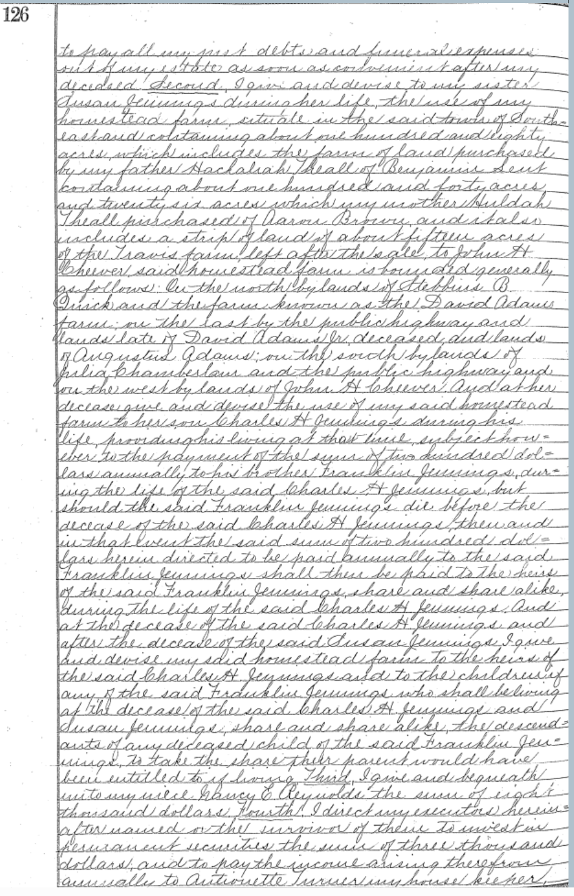
That exception is the hinge of the whole history. The homestead could not be sold. It could only descend.
VI. The Jennings Inheritance
The connection was older than the will. When Thatcher and Arvah signed their agreement with the Harlem Railroad in July 1850, the subscribing witness was “Aaron Jennings… that he resides at Croton Falls, in the county of Westchester” PC W/270 — a Jennings standing in the room with the Theall brothers, a few miles down the same road, at just the period when Susan Theall, unmarried in 1844, would have been marrying into the family. Whether that man is the Aaron Jennings who conveys this farm forty-five years later, or his father, the record does not say. What it establishes is that the Jenningses were neighbors long before they were heirs.
Susan Jennings took her life estate in February 1888. The record then falls almost silent — the natural silence of title moving by death rather than by deed — until two quitclaims from Aaron Jennings of Southport, Connecticut to Mary Wells Jennings, of the same place, carry the farm into the twentieth century.
The first, dated July 26, 1895 and recorded eighteen months later PC 80/155, releases for one dollar all Aaron’s interest in “all that tract or farm of land… known as the ‘Arvah Theall Homestead Farm,’” reciting it as “a portion of the property of which Arvah Theall died seized.” The second, dated April 2, 1898 PC 81/562, states his capacity outright:
It being intended by this Instrument to convey and assign to the party of the second part, all the right, title and interest which the party of the first part has or may have by reason of being an heir of Charles H. Jennings, deceased, in and to the farm above described, and any award made therefor…
Aaron Jennings to Mary Wells Jennings, April 2, 1898 — Putnam County Liber 81 of Deeds, p. 564
Arvah’s machinery had executed as drawn: the life estates ran their course and the remainder fell to the heirs of Charles H. Jennings, Aaron among them. The 1895 deed does not mention Charles; the 1898 deed names him dead. Charles H. Jennings therefore died between July 1895 and April 1898.
The later deed preserves something else. It assigns Aaron’s interest in a fund on deposit at the Knickerbocker Trust Company of New York — “part of an award for a portion of the above described farm known as parcel No. 143, in a certain proceeding to condemn land for the New York City Water Supply, known as the First Brewster Supplemental Proceeding.” Part of the Theall farm had gone under the Croton system, which accounts in some measure for the shrinkage from the will’s “about one hundred and eighty acres” to the 145 conveyed in the twentieth century.
Source note: Mary Wells Jennings’s exact relation to Aaron is not stated in any instrument. The deeds support “kinswoman of the same Southport household” and no more. Susan Jennings’s death date has not been established.
VII. Mary Jennings, Abel Byers, and the Nolan Sisters
On March 5, 1910, Mary Wells Jennings — then “of the Village of Brewster” — conveyed the whole farm to Abel H. Byers of Hamburg, Berks County, Pennsylvania, with full covenants, for a stated $1,000 PC 101/42. The price is a fraction of any plausible value for 145 acres with buildings, and the sequel shows the sale was never what it appeared. Eleven years later Byers reconveyed to Mary for one dollar, subject to $2,500 of mortgages held by Fannie A. Brundage and to a sitting tenancy PC 131/51 — and that deed sat unrecorded until 1925. In between comes the decisive document.
On October 18, 1919, “Mrs. Mary W. Jennings, of ‘The Pines,’ Town of Southeast” and Abel H. Byers jointly let the farm — 137 acres in round figures, with the buildings, improvements, and the owner’s furniture in the house — to Adeline Nolan and Marie Nolan of Pawling, for five years from November 1, 1919 at $900 the first year and $1,000 thereafter, with a five-year renewal option and a first privilege of purchase PC 117/365. The tenants were to install electric lights in the dwelling, repaint it, put the plumbing “in perfect order,” repair the roofs and “all balconies,” build a new stoop off the back kitchen, and place chemical fire extinguishers in the main building by August 1, 1920; the fire clause suspends rent if damage should “prevent the transaction of business therein.” The lease never says “boarding house.” It describes one being fitted out — and in passing gives the house its condition report for 1919: no electricity yet, plumbing in, tin roof, multiple balconies, a back kitchen, a “main building” distinguished from others.
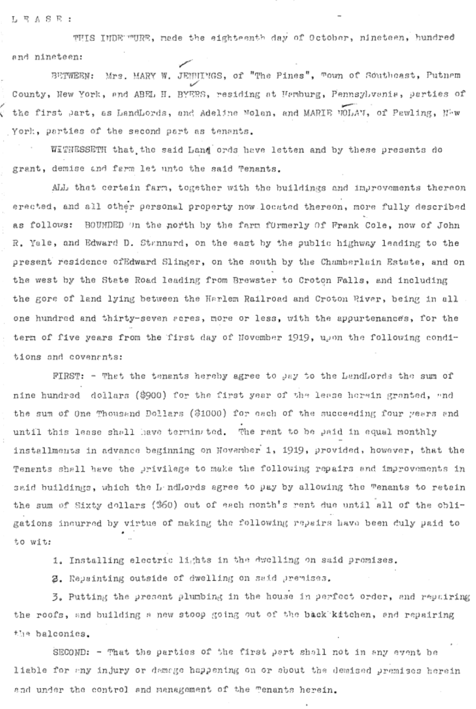
And one clause lays the Byers arrangement bare:
Mary W. Jennings… nominates the tenants herein, Adeline and Marie Nolan, as her sole agents in the management of the estate herein for Abel H. Byers, that is, to pay the taxes, the interest on a mortgage on said premises, and to see about the insurance, and all disbursements are to be charged against the rent, plus four per cent interest, the said Tenants to render the said Abel H. Byers a yearly statement of account.
Lease, Jennings & Byers to Nolan, October 18, 1919 — Putnam County Liber 117 of Deeds, p. 368
Byers holds record title and receives an annual accounting; Mary remains the principal, resident on the place and letting it in her own name. Whatever the 1910 transaction secured, beneficial ownership never really left her — and in 1924, with Byers’s reconveyance still sitting unrecorded, the local press would describe the lodge simply as “the property of Mrs. M. W. Jennings.”
And the Nolans’ establishment now has its name. In July 1920 the Brewster Standard noted that “the Colonial Coffee House opened last Sunday for the season. It is ideally situated about midway between Brewster and Croton Falls and hundreds of autos pass each week. The house is surrounded by large pine trees and looks very inviting to the tired travelers to stop for refreshments.” Midway between the villages, ringed by the pines — this is the farm, in the second season of the sisters’ lease, trading as the Colonial Coffee House. The pine grove that would name everything afterward was already the landmark.
VIII. The Pine Tree Lodge
In May 1922 the establishment changed hands and names. The local press announced that the house — “the successor of the Colonial Coffee House” — would open on May 30 as the Pine Tree Lodge, under “the personal directorship of F. D. Van Vechten,” with fifteen mechanics then at work on alterations and everything “from a bite to a banquet” promised to motorists on the state road from the Bronx to the Berkshires. Two advertisements that same month say plainly what the opening notice implied — the lodge was “formerly the Colonial Coffee House” at the same Croton Falls 10-M telephone — and a third shows Van Vechten renting out the farm’s pasture land, running the agricultural side alongside the hospitality. Picture postcards of the house — one captioned “Pine Tree Lodge, Brewster, N.Y., F. D. Van Vechten, Managing Director” — and a brochure (“45 Miles from New York — Between Croton Falls and Brewster”) document the operation, and the postcard’s image is identifiable as this building: the same pedimented gable with its paired tympanum windows, the same lower wing, and the same stone retaining wall that still runs along Route 22, with the grove beside the house. How Van Vechten’s directorship meshed with the Nolan sisters’ still-running lease is undocumented; the sisters drop from the record after 1921.
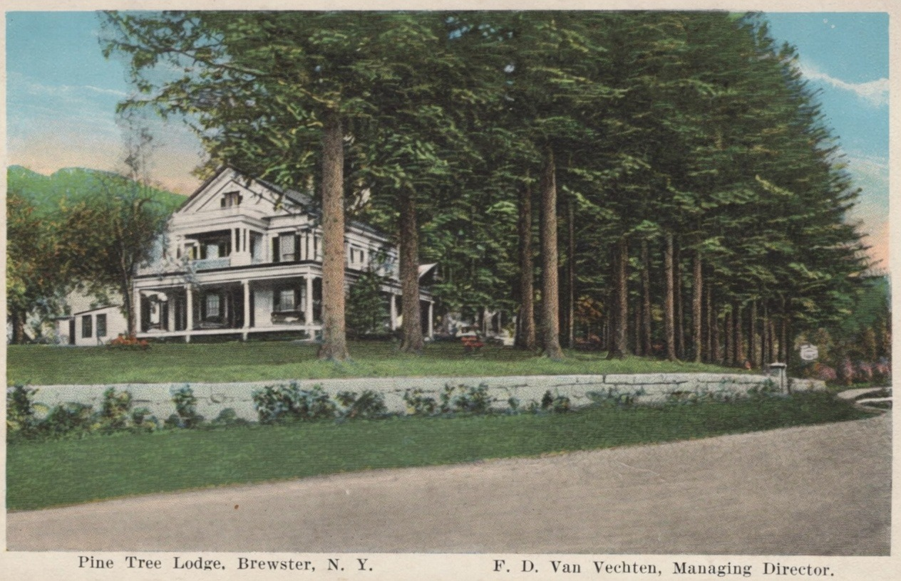
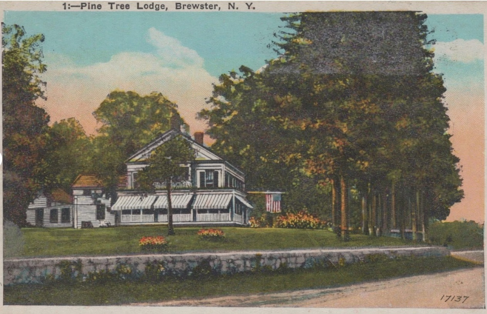
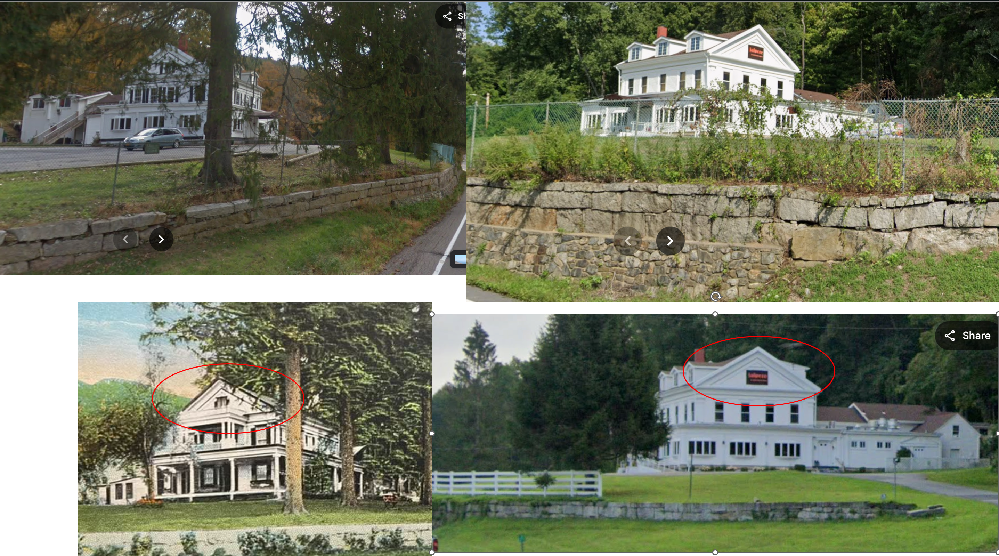
Then, in the lodge’s second season, the movies arrived — and the local press covered it week by week. On September 14, 1923, under “Pine Tree Lodge to House Stars”:
On Monday morning, Sept. 24, F. D. VanVechten will welcome a cluster of twenty-five Griffith stars at the Pine Tree Lodge, which has been chosen as headquarters for 300 members of the most famous cast in filmdom during the time they are engaged on location at Somers, N.Y., where certain episodes of the American Revolution are being staged.
Local press, September 14, 1923
The production was D. W. Griffith’s America, his Revolutionary War epic for the sesquicentennial. A week later the papers reported U.S. Army Regulars arriving to “encamp near the Pine Tree Lodge” for the battle scenes — “the VanVechten camp” — and that “this morning 347 ate breakfast served by the Pine Tree Lodge hostelry,” with a hundred more extras expected the next day. The Independent Market took the contract to feed “the D. W. Griffith force of movie actors now housed and boarded at Pine Tree Lodge, Brewster,” butchering an entire steer for a single day’s feeding, with the count expected to swell to five hundred; Griffith borrowed the Cameo Theatre in Brewster from its managers, Marasco and O’Neil, to screen the day’s footage; his motorcar drew a crowd of admirers on Main Street; and the papers speculated that Dorothy and Lillian Gish would star — a guess the finished film did not bear out, the lead going to Carol Dempster. The coverage was not all festive: in early October a soldier reloading a cannon near Somers had his hand blown off — “the first accident that has happened since the moving pictures have been here at the Pine Tree Lodge, and we hope the last.” The film premiered at the Forty-fourth Street Theatre in New York on February 21, 1924, with Dempster, Neil Hamilton, and Lionel Barrymore leading the cast. The old tradition that Griffith’s people stayed here turns out to have been, if anything, too modest: for the autumn of 1923 this farm was the production’s headquarters, hotel, and commissary.
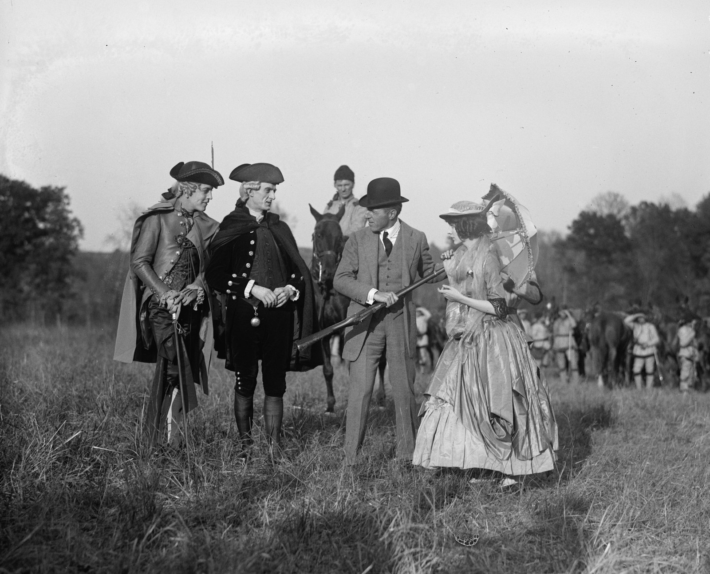
Source note: a 1961 retrospective recalled the cast at a “Colonial Pines Inn,” with the soldiers “encamped on the Colonial Pines acres where the Motel is now located.” With the Colonial Coffee House now documented at this property and the 1923 press placing the Army camp near the lodge, that name is best read as a later blending of this establishment’s own successive names — Colonial Coffee House, the Pines — rather than as a separate house; the camp fields plausibly correspond to the later motor-court parcel up the road.
One more name completes the era. A 1924 notice records that “Mrs. Henry Ward Beecher of New York City has leased the property of Mrs. M. W. Jennings at Brewster, known as the Pine Tree Lodge” — and by March 1928 the press could call the house “the famous Beecher Lodge, also known as Pine Tree Lodge.” The tenancy did not merely occupy the house; it renamed it. Who she was is a genuine question — the abolitionist’s widow, Eunice White Beecher, died in 1897, so the lessee of 1924 was the wife or widow of a namesake descendant, and her identification is an open item — but her establishment evidently ran to the end of the family’s ownership. Van Vechten had moved on: by January 1926 he was “formerly proprietor of Pine Tree Lodge,” lately of a Miami hotel season and newly the purchaser of the Henshaw Inn at Mount Kisco. A retrospective reprinting of that item decades later appended three words that certify the whole identification: Pine Tree Lodge, Brewster — “(now Cunningham’s).”
The end came as a real-estate story. On March 9, 1928 the press reported that “the famous Beecher Lodge… and the adjoining 140 acre estate of Mary [W.] Jennings has been sold to a Mount Kisco Syndicate headed by William J. Towey,” James F. Greene brokering — a property “with about one mile of frontage on two highways.” The syndicate’s vehicle was the Elwoody Tire Co. Inc., and the deed followed on April 2, 1928 PC 144/401, reciting J. Albert Schaefer’s survey of February 1926. A hundred and seven years of family ownership ended in a subdivider’s purchase.
IX. The Severance and the Ten Acres
Elwoody Tire held the homestead corner for four months. On August 21, 1928 the corporation, by its president Barney H. Elman, conveyed a newly drawn parcel of 10.036 acres — the house, its road frontage, and the ground behind it, carved from the northwest corner of the old farm on Schaefer’s survey courses — to Eugene M. and Josephine S. Michel of Grant City, Staten Island PC 146/398. The company kept and subdivided the rest, which is why “land now or formerly of Elwoody Tire Company” bounds the parcel in every deed for thirty-five years — and why the boundary figures on the modern tax map around the restaurant are, segment for segment, Schaefer’s 1926 wall courses added together.
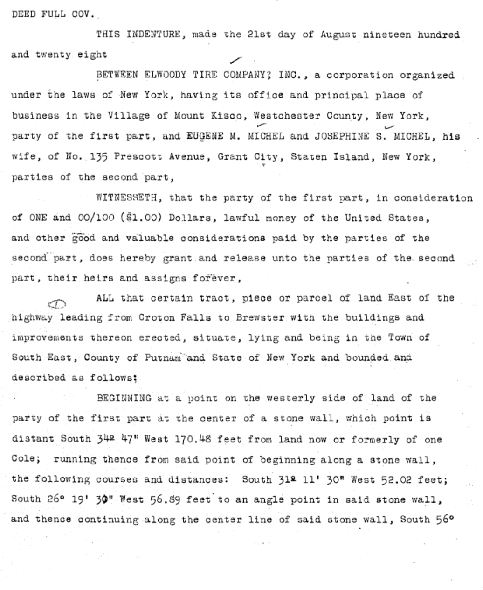
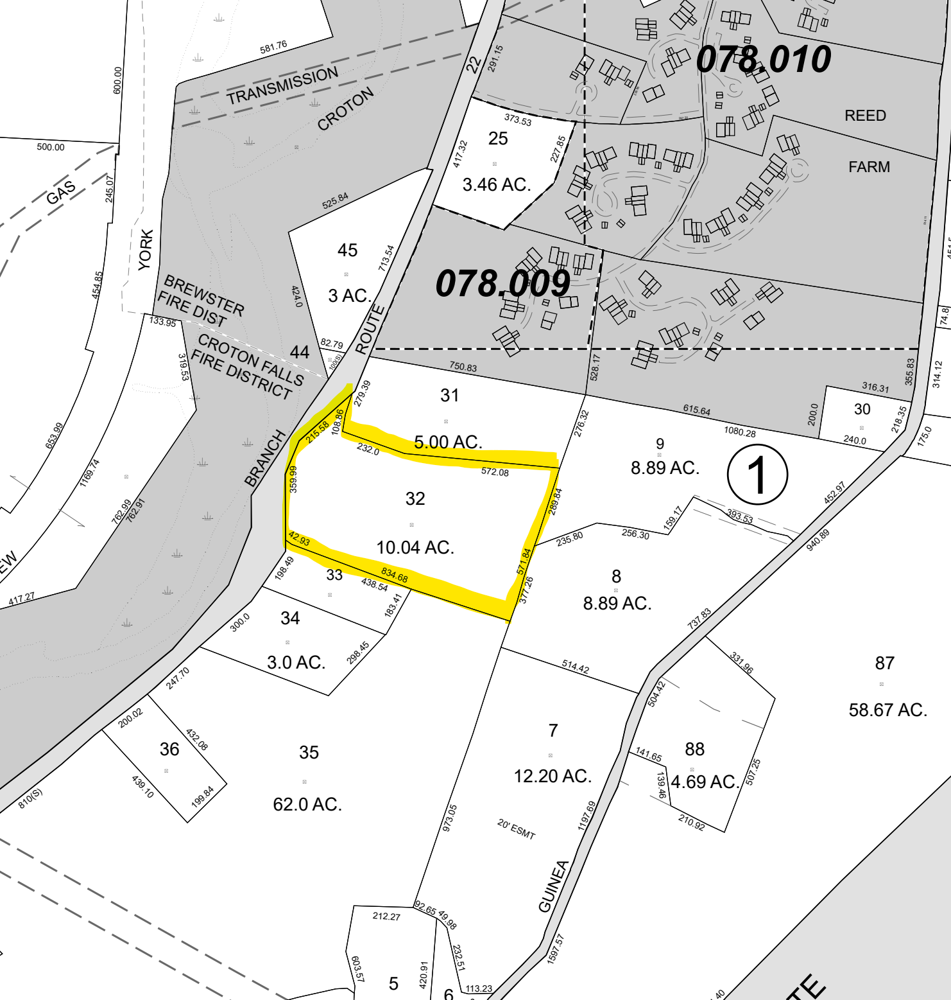
The Michels invested at once. That October the press reported P. F. Beal and Sons’ completion of a ninety-foot flowing artesian well for “Eugene Michel, the new owner of the Pine Tree Lodge property on the Croton Falls–Brewster road” — “said to be the finest in Putnam county,” the driller marveling that when he struck water “he thought the Atlantic and Pacific had met in a storm.” The lodge name still attached to the place, and the new owners were fitting it for a working future.
From the severance forward the ten acres has its own unbroken chain. Eugene Michel died within five years; his widow sold on June 23, 1933 — ten weeks after legal beer returned and five months before Repeal — to George and Alfred E. Muller of the Bronx as joint tenants, at a price the documentary stamps and assumed mortgage put near $18,000 PC 186/227. Alfred died; George survived to the whole; an intra-family deed of 1945 put the property in George and Elizabeth Muller PC 300/396, excepting a sliver taken for the reconstruction of the Croton Falls–Brewster state highway; and in April 1946 the Mullers sold to David B. and Lillian M. Griffin of Brewster PC 306/497. Griffin, widowed, sold in 1959 to Henry Van Pala PC 520/222; Van Pala, removed to Ridgefield, sold in November 1963 to William F. Cunningham for about $30,000, financed by a $25,000 purchase-money mortgage to the Putnam County Savings Bank PC 584/381.
The commercial era the town remembers unfolds within the next two ownerships. Cunningham’s restaurant occupied his own tenure, 1963–1975. Vincent Ficarra bought in September 1975 PC 730/475, and both the Inner Circle club of local memory and the later Riverhouse restaurant fall within his ownership — a sequence worth stating precisely, because popular retellings shuffle it. In 1993 the Jaipore restaurant opened in the building as a tenant; Prime India Enterprises Inc. took title in August 1999 PC 1480/470, and conveyances in 2015 PC 1990/270 and 2022 PC 2273/117 brought the property to its present corporate owner, with the restaurant operating throughout.
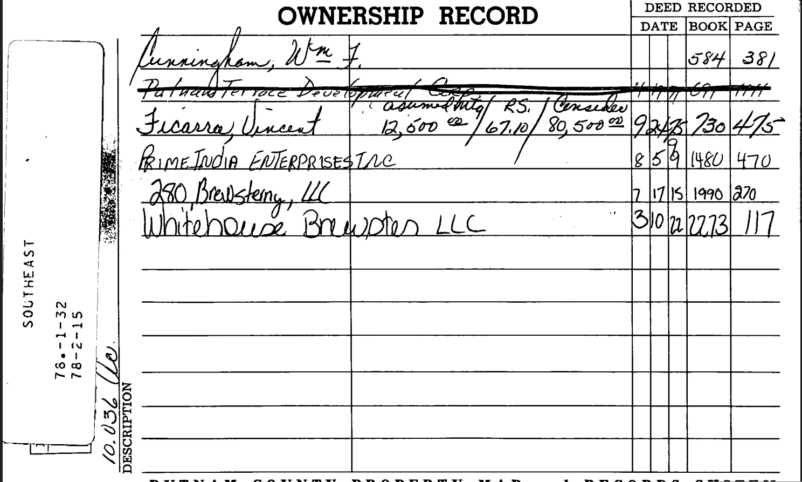
Source note: the instruments from 1975 forward are cited from the assessor’s ownership card and the county index and have not yet been individually read. Whether Cunningham operated in the building as a tenant before purchasing in 1963 remains an open occupancy question, as does the precise sequence of club and restaurant operations within the 1975–1999 ownership.
X. The Legends, Tested
A building this visible, with a commercial life this long, accumulates stories. The chain of title, the contemporary newspapers, and the settled chronologies of the famous names involved are the instruments for testing them. Taken in turn:
“Lucky Luciano once owned it”
The claim circulates locally as a secondhand report that an earlier owner saw the name “in the history of the deeds.” That is a testable assertion, and it fails. The chain is complete and fully named from 1811 to the present: Bailey, Brown, and Phillips to Lent; Lent to the Thealls; four generations of Thealls; the Jennings family by devise and descent, with the Byers interlude of 1910–1921 documented as a title-parking arrangement in which Mary Jennings remained the principal; then Elwoody Tire, Michel, Muller, Griffin, Van Pala, Cunningham, Ficarra, Prime India, and two successor companies. No Luciano, no Lucania, no known alias, and no corporation without an independent documented existence appears anywhere in it. The arithmetic forecloses even the gaps: Salvatore Lucania was born in November 1897 and arrived in New York as a child around 1906–07 — he was twelve when the 1910 conveyance opened the century, and the property was held by the same family throughout his infancy. His own residences are documented continuously — East Tenth Street to 1927, then the Barbizon Plaza, then the Waldorf Towers, all in Manhattan — and the extensive literature on his properties places nothing in Putnam County. No document supporting the claim has ever been produced.
What a deed chain cannot test is patronage. Whether anyone of that world ever dined at a roadhouse on the state highway is a question no surviving record is likely to answer, and on that narrower point the file is simply silent.
“An early Charlie Chaplin studio”
Refuted by the settled chronology of Chaplin’s career. He toured America with the Karno company until signing with Keystone in September 1913, arrived in Los Angeles that December, and made his first film there in early 1914; his subsequent studios were in California, with a Chicago interlude. There was never a Chaplin studio in the East, and nothing connects him to this building. The claim has already softened in local retellings — from “occupied by the Charlie Chaplin Studios” to “productions associated with” them — which is what happens to a story with nothing beneath it.
The Griffith tradition — confirmed, and then some
The tradition held that D. W. Griffith’s people used or were housed in this building during the 1923 filming of America. The contemporary record, recovered in the course of this research, says far more: the Pine Tree Lodge — this house — was reported on September 14, 1923 as “chosen as headquarters for 300 members of the most famous cast in filmdom”; a week later 347 people ate breakfast served by “the Pine Tree Lodge hostelry” while Army Regulars encamped beside the farm for the battle scenes; the local butcher cut up a steer a day to feed a count expected to reach five hundred; the day’s footage was screened at the Cameo Theatre in Brewster; and in October a soldier lost his hand to a cannon misfire — “the first accident… since the moving pictures have been here at the Pine Tree Lodge.” The overflow filled the neighborhood — Lake Mahopac Lodge and the Titicus Inn among them — and the film premiered in New York on February 21, 1924. This is the rare local legend that contemporary evidence enlarges rather than deflates: the claim was “housed cast members”; the fact was headquarters, hotel, and commissary for an army.
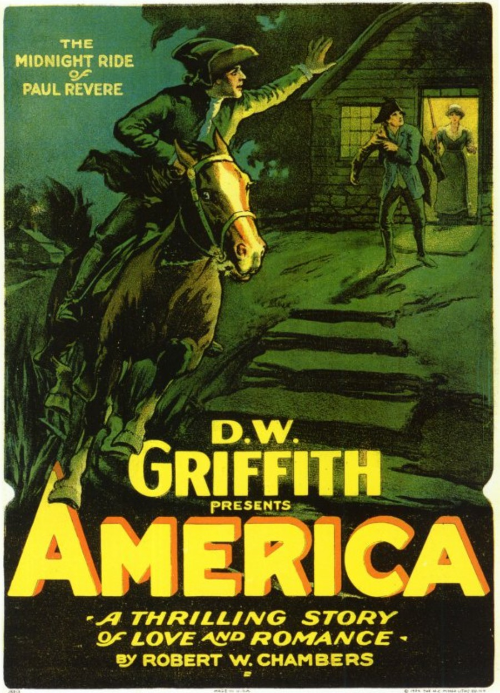
“Mrs. Henry Ward Beecher moved into the house in 1887”
The published version cannot be right as written — and the truth behind it turns out to be better documented and stranger. The restaurant’s account has the widow of the great abolitionist moving in on his death in 1887, with Harriet Beecher Stowe visiting from Litchfield. Every checkable element fails: Stowe lived in Hartford, not Litchfield, from 1873 until her death there in 1896; Eunice White Beecher, the abolitionist’s widow, died in Stamford in 1897; and in 1887 this house was no empty mansion but the home of Arvah Theall, then in the last year of his life, with his housekeeper.
And yet a Mrs. Henry Ward Beecher did lease this house — and gave it her name. A 1924 notice records that “Mrs. Henry Ward Beecher of New York City has leased the property of Mrs. M. W. Jennings at Brewster, known as the Pine Tree Lodge,” and by March 1928 the press was calling the house “the famous Beecher Lodge.” She was necessarily the wife or widow of a namesake descendant — the abolitionist was survived by three sons of the New York area, and a junior Henry Ward belongs to their generation’s children — and her exact identity is an open research item. The legend, then, is a compression: a real and locally famous Beecher tenancy of the 1920s, promoted in retelling to the great man’s widow and slid back thirty-seven years to meet his death. The house’s Beecher story is true; the restaurant’s version of it is not.
“Built in 1856 for a local county judge”
This one has moved, over the course of the research, from unsupported to substantially recoverable. There was no judge in the chain in the sense the claim implies — but there was a magistrate living on the farm. Thacher H. Theall was serving as a Justice of the Peace of Putnam County from at least May 1842, taking acknowledgments in that capacity, and he owned this land until his death in 1886. If the house went up or was substantially enlarged in the mid-1850s, as the building’s two-part massing and the family’s 1857 mineral income both allow, then he built it — for himself, not on commission. A Justice of the Peace is not a County Judge, though under the 1846 constitution two Justices in each county sat as Justices of Sessions alongside the County Judge in the Court of Sessions, so the elevation in local memory is a short one. The legend is best read not as invention but as compression: the judge’s place, worn down over a century and a half.
“A speakeasy in the 1920s”
Untested, and now with a documented context to test it against: through the Prohibition years this building was a going public house under three successive names — the Colonial Coffee House from 1920, the Pine Tree Lodge from 1922, the Beecher Lodge by 1928 — serving “refreshments for the multitude” on the main road to the Berkshires and, in one documented week of 1923, breakfasting 347 people at a sitting. What was in the glasses is exactly the sort of thing the license records and the newspaper’s raid reports would show, and neither has yet been searched to conclusion.
XI. Chain of Title
PC = Putnam County Clerk’s Office, liber/page of Deeds. Instruments marked indexed have been located in the grantor/grantee indexes but not yet read; those marked card are cited from the assessor’s ownership record. All others have been read in full from the record copies. Dates are of execution; recording dates differ, sometimes by years.
| Date | Grantor → Grantee | Liber/Page | Notes |
|---|---|---|---|
| Aug. 5, 1811 | Hackaliah & Mary R. Bailey (Somers) → Benjamin Lent | PC A/262 | $115.68; 7 ac. 2 r. 34 rods. “Part of a Farm commonly called the Hallett or Iron Works Farm”; David Crosby’s Paper Mill Lot. Dutchess County at date. |
| May 10, 1814 | Aaron & Letty Brown → Benjamin Lent | PC A/264 | $105; 1 ac. 2 r. 14 rods “near the Paper Mill on Croton River.” |
| Mar. 25, 1815 | Hackaliah Bailey → Benjamin Lent | PC A/267 | $583; 19 ac. 1 r. 13 rods. |
| Dec. 9, 1816 | Hackaliah Bailey → Benjamin Lent | PC A/265 | $1,500; 40 ac. |
| Dec. 1817 | Hackaliah Bailey → Benjamin Lent | PC A/269 | $2,000; 108 ac. in three pieces. |
| Apr. 4, 1818 | James Phillips → Benjamin Lent | PC A/271 | $200; 17 ac. 2 r. 20 perches. Retained by Lent; the adjoining lot in later descriptions. |
| Jun. 25, 1821 | Benjamin & Belinda Lent → Hachaliah Theall (North Salem) | PC M/16 | $2,650; 142 ac. 1 rood — the founding purchase. Recorded c. 1839. No buildings clause. |
| 1821 × 1831 | Hachaliah Theall dies | not located | Will recited in Q/150 and Q/154: widow’s thirds for life, remainder equally to seven heirs. |
| Apr. 2, 1831 | Aaron & Letty Brown → Huldah Theall, widow | PC H/486 | ~$217; 26 ac. 12 perches. Bounds name “the heirs of Hachaliah Theal Dec’d.” |
| Apr. 17, 1837 | Daniel S. Judd et al. (Patterson) → Hopkins, Arva & Orrin Theall | PC L/83 | $2,000; 35 ac. west of the turnpike. ~$57/ac. Origin of the undivided thirds. |
| Jan. 2, 1841 | Lydia L. Theall → Thacher H., Arva & Orwin Theall | PC S/32 | $500; her share of the 142 ac. Held 4 yrs. unrecorded. |
| Apr. 1, 1842 | Orwin Theall (New York City) → Huldah Theall | PC P/428, P/429 | $1,200 + $1,000. Temporary; reversed in December. |
| Dec. 26, 1842 | Huldah Theall → Orwin Theall | PC Q/154 | $2,200 — the April sums exactly reversed. Ack. before Thacher H. Theall, J.P. |
| Dec. 28, 1842 | Orwin & Ann Maria Theall → Thacher H. & Arvah Theall | PC Q/150 | $1,200; 142 ac., reserving 1/7 of the widow’s thirds under Hachaliah’s will. The brothers’ partnership begins. |
| Dec. 28, 1842 | Orwin & Ann Maria Theall → Thacher H. & Arvah Theall | PC Q/153 | $700; undivided ⅓ of the 35 ac. |
| Nov. 19, 1844 | Susan Theall → Thacher H. & Arva Theall | PC S/34 | $300. Executes alone — unmarried at this date. |
| Jul. 24, 1850 | Thacher H. & Arvah Theal ↔ New York & Harlem Rail Road Co. | PC W/270 | Not a conveyance. Strip taken by appraisement; $496.50 settlement + perpetual fence covenant. Witness Aaron Jennings of Croton Falls. |
| 1857 | Thatcher H. & Arvah Theall → Holman J. Hale | PC 31/392, 32/2, 32/98 | indexed — mineral rights, three deeds. Recited as live 1928–1963. |
| 1861 | Holman J. Hale, by Sheriff → Thatcher Theall | PC 37/87 | indexed — may extinguish the 1857 severance. |
| 1880 | Thatcher H. & Arvah Theall → John H. Cheever | PC 61/15 | indexed — mine-side land; creates the western bound. |
| d. 1885×86; pr. Mar. 15, 1886 | Thatcher H. Theall → Arvah Theall, by will | PC 66/331 | Will of Feb. 27, 1868; two clauses; entire estate to “my brother, Arvah Theall.” |
| d. 1887×88; pr. Feb. 21, 1888 | Arvah Theall → Susan Jennings, life estate | PC 68/125 | Homestead ~180 ac. excepted from the executors’ power of sale; then Charles H. Jennings for life; remainder to his heirs and Franklin’s children. |
| 1889 | Executors of Arvah Theall → E. J. W——(?); Geo. Cole | PC 69/73, 69/102 | indexed — outlying land only, not the homestead. |
| 1895 × 1898 | Charles H. Jennings dies; remainder vests | — | Bracketed by the two quitclaims below. |
| Jul. 26, 1895 | Aaron Jennings (Southport, Conn.) → Mary Wells Jennings | PC 80/155 | $1 quitclaim; “Arvah Theall Homestead Farm,” ~180 ac. Rec. Feb. 10, 1897. |
| Apr. 2, 1898 | Aaron Jennings → Mary Wells Jennings | PC 81/562 | Confirmatory; “as heir of Charles H. Jennings, deceased”; Parcel 143, First Brewster Supplemental Proceeding. Rec. Oct. 7, 1898. |
| Mar. 5, 1910 | Mary Wells Jennings → Abel H. Byers (Hamburg, Pa.) | PC 101/42 | Full covenants; stated $1,000; “Old Theall Homestead Farm.” |
| Oct. 18, 1919 | Jennings & Byers → Adeline & Marie Nolan (Pawling) | PC 117/365 | Lease, 5 yrs. + option; 137 ac.; lessor “of The Pines.” Premises traded as the Colonial Coffee House (1920), then from May 30, 1922 as the Pine Tree Lodge (F. D. Van Vechten); Griffith headquarters, Sept. 1923; leased to Mrs. Henry Ward Beecher, 1924; “the famous Beecher Lodge” by 1928. |
| May 10, 1921 | Abel H. & Bertha Byers → Mary Wells Jennings (White Plains) | PC 131/51 | $1; Brundage mortgages; subject to the Nolan lease. Rec. Jan. 23, 1925. |
| Apr. 2, 1928 | Mary Wells Jennings → Elwoody Tire Co. Inc. | PC 144/401 | ~145 ac. in 4 parcels; Schaefer survey, Feb. 1926. Reported Mar. 9, 1928 as the sale of “the famous Beecher Lodge” to a Mount Kisco syndicate headed by William J. Towey; James F. Greene, broker. End of family ownership. |
| Aug. 21, 1928 | Elwoody Tire Co., Inc. → Eugene M. & Josephine S. Michel | PC 146/398 | SEVERANCE — the 10.036-acre house parcel created. Ninety-foot artesian well drilled for Michel that October. |
| Jun. 23, 1933 | Josephine S. Michel → George & Alfred E. Muller (Bronx) | PC 186/227 | ≈$18,000 (inference); joint tenants. Ten weeks after legal beer. |
| Oct. 25, 1945 | George Muller → George & Elizabeth Muller | PC 300/396 | Intra-family; excepts Parcel 16.5, State Highway 5006. |
| Apr. 18, 1946 | George & Elizabeth Muller → David B. & Lillian M. Griffin | PC 306/497 | Ten acres only. |
| Aug. 1959 | David B. Griffin → Henry Van Pala | PC 520/222 | Day of month uncertain in the record copy. |
| Nov. 18, 1963 | Henry Van Pala → William F. Cunningham | PC 584/381 | ≈$30,000; $25,000 PMM, Putnam County Savings Bank. |
| Sep. 24, 1975 | William F. Cunningham → Vincent Ficarra | PC 730/475 | card — $80,500. |
| Aug. 5, 1999 | Vincent Ficarra → Prime India Enterprises Inc. | PC 1480/470 | card — Jaipore (in the building since 1993) takes title-side ownership. |
| Jul. 17, 2015 | Prime India Enterprises → 280 Brewstery LLC | PC 1990/270 | card |
| Mar. 10, 2022 | 280 Brewstery LLC → Whitehouse Brewster LLC | PC 2273/117 | card — present owner of record. |
- The 1924 Mrs. Henry Ward Beecher — her identity within the Beecher family (the namesake line runs through the abolitionist’s surviving sons), and the running of “the famous Beecher Lodge” to 1928.
- The 1923 Army camp fields — whether “the VanVechten camp” lay on the farm’s own ground or the neighboring parcel that later held a motor court; and the identity of the soldier maimed in the October cannon accident.
- The Nolan–Van Vechten transition — how management passed mid-lease, and what became of the sisters after 1921.
- The will of Hachaliah Theall, 1821 × 1831 — recited twice but not located. Putnam County Surrogate’s Court; Westchester if he died still resident at North Salem.
- Construction date — Town of Southeast assessment rolls, 1840–1860; the 1854 O’Connor and 1867 Beers map labels at this site; federal agricultural schedules; the building’s own fabric.
- The pre-1811 chain — Hackaliah Bailey as grantee, and behind him the Hallett family and the iron works itself, in the Dutchess County records.
- Hopkins Theall — co-purchaser of the 35 acres in 1837; his undivided third was never released of record.
- Susan Jennings’s death, and whether heirs of Charles H. Jennings besides Aaron released their shares. Surrogate’s files, Putnam and Fairfield County, Connecticut.
- Parcel No. 143, First Brewster Supplemental Proceeding — taking map and award schedule.
- The 1861 sheriff’s deed PC 37/87 — whether it returned the mineral rights, making the exception recited from 1928 to 1963 a dead letter.
- Prohibition-era license and enforcement records for the Pine Tree Lodge, and the club-and-restaurant sequence of 1975–1999.
- The modern instruments — the 1975, 1999, 2015, and 2022 deeds, cited from the ownership card and not yet read.
- Newspaper citation pass — publication names for the press items of 1922–1926 and 1961, currently cited by date.
Sources Consulted
- PC A/262, A/264, A/265, A/267, A/269, A/271 — the six Lent assembly deeds, 1811–1818. Source of the “Hallett or Iron Works Farm” name and the Crosby paper mill.
- PC M/16 — Lent to Hachaliah Theall, June 25, 1821. The founding purchase.
- PC H/486 — Brown to Huldah Theall, April 2, 1831. Evidence for Hachaliah’s death.
- PC L/83 — Judd et al. to three Theall sons, April 17, 1837. The 35-acre western parcel.
- PC S/32, PC P/428, PC P/429, PC Q/154, PC Q/150, PC Q/153, PC S/34 — the consolidation sequence, 1841–1844.
- PC W/270 — Theall and the New York & Harlem Rail Road, July 24, 1850.
- PC 66/331 — Will of Thatcher H. Theall (1868; probated 1886).
- PC 68/125 — Will of Arvah Theall (1886; probated 1888). The homestead’s composition, bounds, and devise scheme.
- PC 80/155, PC 81/562 — the Jennings quitclaims, 1895 and 1898.
- PC 101/42, PC 117/365, PC 131/51, PC 144/401 — the Byers arrangement, the Nolan lease, and the 1928 sale.
- PC 146/398, PC 186/227, PC 300/396, PC 306/497, PC 520/222, PC 584/381 — the severance and the ten acres, 1928–1963.
- Brewster Standard, July 2, 1920 — “The Colonial Coffee House opened last Sunday for the season… midway between Brewster and Croton Falls… surrounded by large pine trees.” The Nolan-era operation, at this property.
- “Pine Tree Lodge” opening notice and advertisements, May 5, 12, and 26, 1922 — the succession from the Colonial Coffee House (“formerly the Colonial Coffee House”); F. D. Van Vechten’s management; the May 30 opening; pasture to rent.
- “Pine Tree Lodge to House Stars,” September 14, 1923; “Somers Town Stars in Movies,” September 21, 1923 (the 347 breakfasts; the Army camp; the Cameo Theatre screenings); “Soldier in Movies Has Hand Blown Off,” October 5, 1923; and the Brewster Standard’s “Fifty Years Ago” reprint of September 27, 1973 (the Independent Market commissary contract).
- “Well Known Actors Join Cast of ‘America,’” February 8, 1924 — the cast roster and the February 21 New York premiere.
- Lease notice, 1924 — “Mrs. Henry Ward Beecher of New York City has leased the property of Mrs. M. W. Jennings at Brewster, known as the Pine Tree Lodge.”
- Van Vechten item, January 29, 1926 — “formerly proprietor of Pine Tree Lodge”; purchase of the Henshaw Inn, Mount Kisco — with a later retrospective reprint appending “(now Cunningham’s).”
- Sale report, March 9, 1928 — “the famous Beecher Lodge, also known as Pine Tree Lodge” sold to the Towey syndicate of Mount Kisco.
- Well item, October 5, 1928 — the ninety-foot artesian well drilled for Eugene Michel, “new owner of the Pine Tree Lodge property.”
- “Griffith’s ‘America’ Premieres at Empress,” May 11, 1961 — retrospective; the “Colonial Pines Inn” recollection, treated as noted in Section VIII.
- Two Pine Tree Lodge picture postcards and a brochure, c. 1922–1925 — one card captioned “F. D. Van Vechten, Managing Director,” the second numbered “1” and bearing plate no. 17137; the building identified by its gable fenestration, wing, and surviving roadside stone wall.
- Publication names for the press items are pending a citation pass; items are cited by date.
- Hall & McChesney consolidated Index to Deeds, Putnam County — Grantor and Grantee volumes for Theall/Theill (p. 1648), Jennings (pp. 824–825), and Lent (p. 968), read in full.
- Putnam County Real Property ownership record card for the subject parcels — source for the 1975–2022 conveyances pending individual reads.
- Current Putnam County tax maps — whose boundary figures for the house parcel reproduce, segment for segment, the aggregated courses of the February 1926 Schaefer survey.
- Survey of the Jennings (Theall) farm by J. Albert Schaefer, C.E., Mount Kisco, N.Y., February 1926 — recited in PC 144/401.
- State Highway No. 5006 (Croton Falls–Brewster, Part 1) appropriation, Parcel 16.5 — recited in PC 300/396.
- First Brewster Supplemental Proceeding, Parcel No. 143 — recited in PC 81/562.
- D. W. Griffith during filming — National Photo Company Collection, Prints & Photographs Division, Library of Congress, catalog record 2016836079 (digital id npcc.09805). No known restrictions on publication. The Library’s record gives no location for the exposure; it is reproduced here as a view of the America company, not of this property.
- America theatrical poster (“The Midnight Ride of Paul Revere”), copyright 1924 by the M. C. Miner Litho. Co., New York — public domain by expiration of the 1924 term.
- Photographs of the building and of documents in the writer’s possession, and scans of the writer’s own copies of the two Pine Tree Lodge postcards and the brochure.
- Jaipore Royal Indian Cuisine, published property history — source of the Beecher, Chaplin, and “county judge” claims tested in Section X; contains a demonstrable error in placing Harriet Beecher Stowe in Litchfield in the late 1880s.
- Local recollections circulated on social media, 2026 — source of the Luciano ownership claim and the restaurant-era sequence corrected in Section IX.
- Standard published chronologies of Charles Chaplin’s career, D. W. Griffith’s America (1924), the Beecher family, and Salvatore Lucania’s documented residences — public-tier context for Section X.
Research by R. Griffin · July 2026 · A Property History